Harry Kaplan's Portfolio
Data Analytics & Scouting Intern
2026 Season
New York Boulders
Frontier League
Advanced Scouting Reports
Created in-depth reports incorporating an offensive leaderboard ranking hitters' wOBA, xwOBA, wRC+, and OPS+. Individual player pages include spray charts, exit speed heat maps, TrackMan percentile rankings, opponent quality of contact & plate discipline metrics vs. pitch types, count data, and a pitching plan.
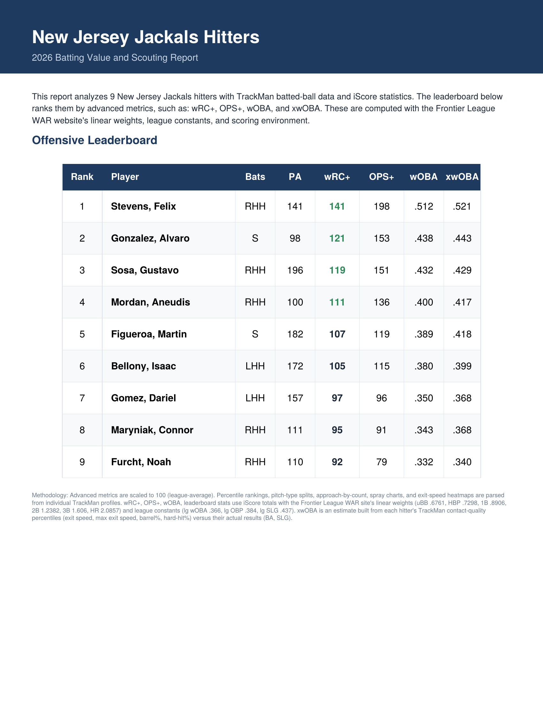
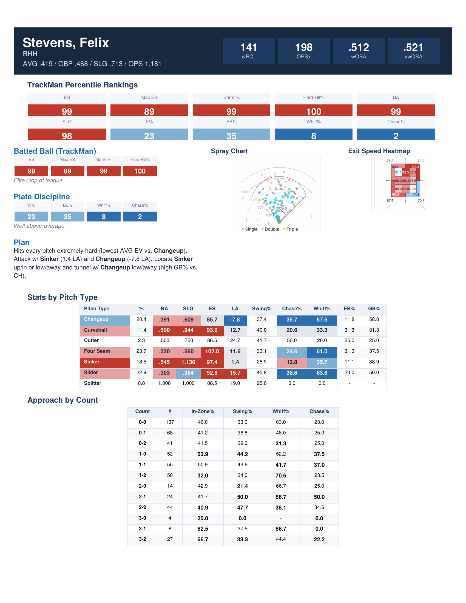
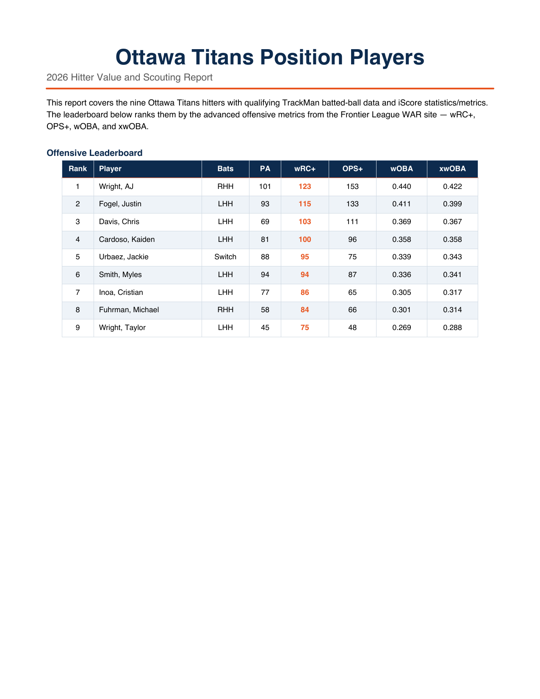
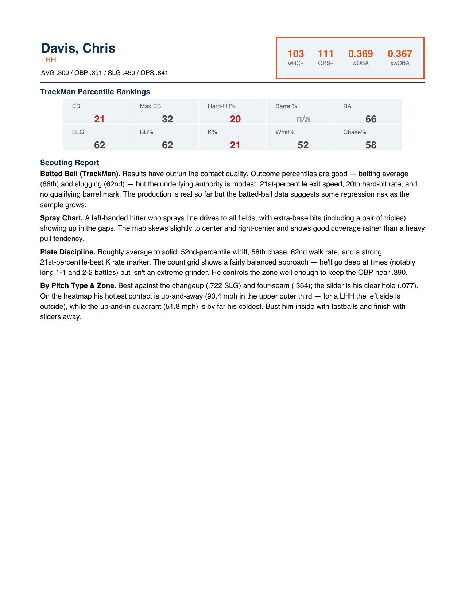
Advanced metrics (wRC+, OPS+, wOBA, xwOBA) are calculated from my Frontier League WAR site. wRC+ and OPS+ are league and park-adjusted to a 100 average. wOBA uses Frontier League linear weights (league wOBA = .357, R/G = 6.3). xwOBA is calculated based on contact-quality (exit velocity, launch angle, hard-hit%).
Pitcher Evaluation Cards
Created individual pitcher cards built from TrackMan data through Python in Visual Studio Code, highlighting a Horizontal Break (HB) vs. Induced Vertical Break (IVB) plot, pitch usage, pitch movement profiles, and Stuff+, Location+, and Pitching+ per pitch type.
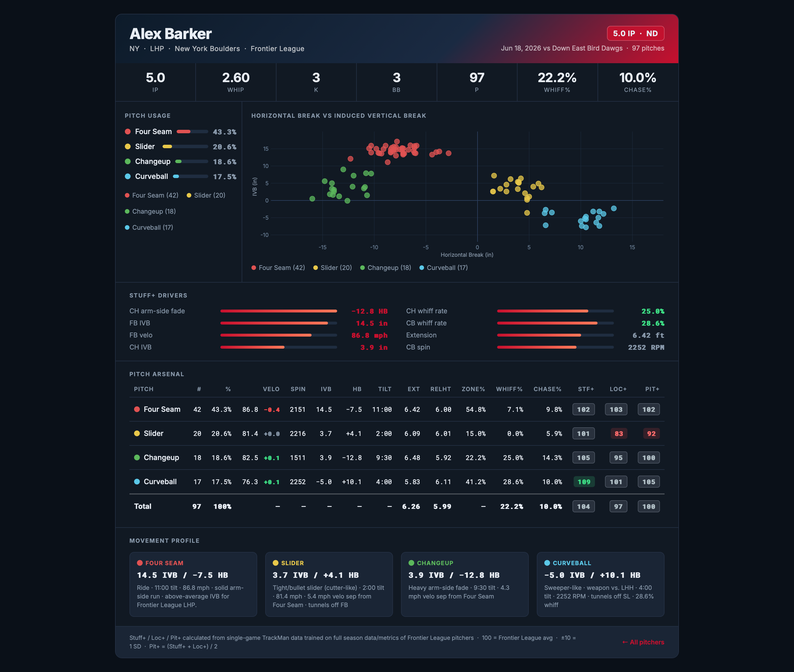
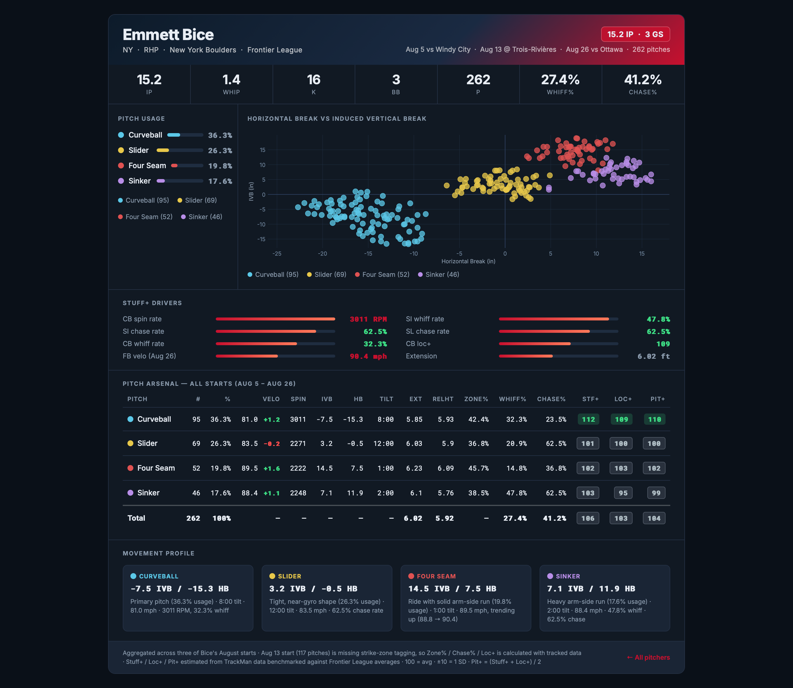
Traditional Scouting Reports
Wrote traditional scouting reports prior to the season on roster additions by the Brockton Rox ahead of our series. Evaluated pitchers and positional players out of independent and college ball through video, career statistics, batted ball data, pitch usage metrics, and a plan for our staff.
Richard Brito
Projects as high leverage relief pitcher, sits mid 90s and tops high 90s. Long levered, strong build. Gets down the mound well w/ smooth tempo leg drive. Hides the ball well behind his back right hip. Over the top arm slot w/ high IVB FB (more ride than run). Misses glove side more than arm side as head flies towards 1B line on release.
Hasn't started a game in 2 years. Threw 12.1 IP last year, w/ 6K/12BB, and 2.92 ERA. FB usage 45-55%, w/ hard/tight SL and depth CH. Mostly FB/SL mix to RHH and mixes in CH to LHH.
Notes: Be patient vs. Brito. The key is not to chase and to get on top of his FB. See pitches/work the count and time up the + FB.
Enmanual De Los Santos
Another high velo RHP who projects as a more stretched out version of Richard Brito. Lean build w/ good hip/shoulder separation. Couldn't find any video of De Los Santos but traditional stats highlight above average K% and below average BB%. Hasn't pitched since 2023 with Pirates in Florida Complex League.
His career WHIP is 1.60, ERA is 3.32 across 65.0 IP. His K/9 is 11.6 and BB/9 is 6.9.
Notes: Again, patience is key. Doesn't allow many XBH/HR. Not sure what his primary secondary is but assuming high usage FB.
Brock Riley
Lean RHP w/ violent delivery. Low 3/4 arm slot but mixes release points (occasional side arm). Hasn't pitched since 2022 w/ Empire State Greys. Played in Boston Metro Baseball League (28+) and dominated w/ 0.89 ERA and 63K/8BB. Good command w/ 3+ pitch mix. Heavy FB w/ high HB. Lives low in zone w/ high GB%.
Projects as MIRP who can stretch 5+ innings.
Notes: Tough vs. RHH as everything rides in on hands.
Matt Colucci
Has struggled at pro level, with 4.91 ERA, 1.69 WHIP, and 10.5 H/9. Strong frame w/ high 3/4 arm slot. Pitches to contact but has generated 11.6 K/9 in pro ball. Got roughed up last year in Pioneer League in limited action (4IP, 6H, 5ER, 5K, 7BB).
Sits around 90MPH w/ a couple strong secondaries.
Notes: MIRP w/ strong splits vs. RHH. Has struggled vs LHH throughout career.
Richie Cimpric
Tall RHP w/ full arm stroke and high leg lift, from a 3/4 arm slot. High HB w/ more run than ride. Good extension w/ smooth/soft landing. CH has good vertical depth (lower HB). Gyro type SL w/ good velo separation off FB.
Got tagged in 2025 w/ State College Spikes in MLB Draft League (4IP / 11H / 8ER / 3K / 2BB). Throughout college (Lafayette 2022, Seton Hall 2023, and St. Louis 2025) he pitched 58.2 IP, allowing 68 hits, 4.14 ERA, 38K, and 22BB. Has never missed many bats but limits walks (career 7.2K/9 and 3.5BB/9). Pitches to contact.
Notes: Will live in zone but is very hittable. FB/SL/CH guy (not sure what the main secondary is but CH looked more consistent than SL).
Carson McKenna
Compact build w/ HB FB and slurvy SL. Video is from years ago but has a little delay at top of release.
Last pitched for Tuscon Saguaros out of the bullpen. Pitched 19.1IP / 12H / 22K / 12BB, with 4.19 ERA. Pitched previously for Houston-Victoria at the NAIA level. Threw 106.2IP, generating a 5.57 ERA w/ 105K and 63BB and 27HBP. His K/9 rate has increased every year (3.2 to 10.4) and his BB/9 have stayed constant (5.3).
Notes: Can throw secondaries early in count w/ confidence, relies on command and chase.
Thomas Nelson
Strong RHP who sits around 90MPH w/ 5 pitch mix (FB, CU, CB, SW, Forkball). Posted 2.93 ERA at Webber International University across 43 IP. Finished 2024 with 2.55 ERA. 26K, .188 opponent BA, across 24.2IP. Has struggled w/ command, walking 39 batters in college career.
Tight CB plays well off FB w/ run. Forkball has CH characteristics and SW tends to stay up in the zone due to late arm action.
Notes: Aggressive intent, attacks hitters. Taps ball to glove during delivery, which can help batters w/ timing. FB/CB/forkball looks like the top 3 in usage rate, respectively.
Casey Bargo
Has touched 96.5 but sits low-mid 90s. Great extension from H 3/4 arm slot and gets down mound well w/ strong lower half. Heavy FB w/ good ride/run. Misses up in zone w/ FB and glove side (looks like a little dead zone 12-14 HB 12-14 IVB). Throws change of pace CB w/ tighter action (not 12-6, more 2-8). Mixes in CH, which is third in usage (misses arm side).
Started 8 games last year for NE Knockouts, posting 7.49 ERA, across 33.2 IP, allowing 35 hits, with 32K and 28BB. Posted 6.49 ERA in college at Ball State and UNC Charlotte, w/ below average K/9 (6.5) and BB/9 5.3). High FB usage early in count and CB as putaway.
Notes: Will walk batters and miss up and glove side w/ FB. Throws CB in dirt to generate chase. Didn't see much of CH.
Mike Esposito
Couldn't find any video but has walked tons of batters in college and in the Atlantic League (career 10 BB/9 w/ 12.1 K/9). Projects as MIRP who can be stretched. Relies on strikeouts when in trouble. Struggled and was a low leverage arm for Lexington and High Point the last two seasons.
Notes: Will be utilized vs. lefties heavy, based on previous seasons.
Michael Saturria
Limited work for Brockton last season but posted a 0.93 ERA across 9.2 IP, with 13K and 5K, scattering 5 hits. Previously pitched for the Rays in the Dominican Summer League and posted high K/9 rates (13.4) and 4.6 BB/9.
No video but based on pictures, he's very lean w/ long loose arm action. High velocity w/ unknown secondaries.
Notes: I wish I had more but I've seen a lot of comments on Saturria's "electric FB."
Hayden Travinski
Big time power bat w/ plus plate coverage and extension to and through contact. Utilizes toe tap as body moves forward, while hands stay back (rubber band effect). Great upper half connection w/ strong lower half.
Excelled over 5 years at LSU, batting .279 with a .958 OPS, with 142 SO and 69 BB. Struggled in the Pioneer League, with 18 SO/5 BB and a .610 OPS.
Pros: Power and defensive versatility (split innings at C and 1B in the minors with the Astros). Great at squaring up low pitches, offspeed. Improved plate discipline in minors (23.3 BB%, 40.8 Swing%).
Cons: Tends to chase, out in front in 2 strike counts. Can get beat up in the zone.
Ricardo Hernandez
Played 4 years at Park University posting a .332 BA, .945 OPS, with 90 SO and 49 BB. Hernandez is a free swinger who doesn't take many walks. Has more of a gap to gap approach than a power bat.
Starts w/ hands high in semi-open stance, coiling into back hip w/ no wasted movement. Sits in back hip w/ short, simple stride. Steep swing tilt.
Pros: Strong contact metrics at college level (NAIA). Stays closed for a long time prior to rotation.
Cons: Steep swing tilt could give him trouble up in the zone and away.
Eddie Javier Jr.
Played 5 years in college at Coppin State, Barry, and Point Park totaling .272 BA, .807 OPS, 126 SO, 63 BB. Struggled in Indy Ball last year w/ the Florence Y'alls, batting .212 w/ 18 SO in 80 PA.
Compact frame w/ strong lower half, good barrel turn w/ level swing. Line drive/spray all fields approach w/ above average power for a middle infielder.
Pros: Hits high FB very well. Most of his HR swings come on up or middle-in FB.
Cons: Not a base stealer and can get swing happy. Struck out an above average clip in Frontier League last season.
Scott Seeker
Showcased great plate discipline throughout college career, Cape Cod League, and in Frontier League last year (Sussex County Miners). Had 114 SO and 101 BB in college. Has a career 1.022 OPS and solid XBH numbers.
Strong base w/ active hands, rotates behind the ball well. Gap to gap approach to all fields.
Pros: Sprays all fields and has great control of strike zone.
Cons: Struggled last year in Frontier League in limited action. Up and away looks like a cold zone for Seeker.
Harry Painter
No video of Painter but he's a two-way player who can get up to 93mph on the mound. Athletic player who can play any corner position. Career .358 BA, with 36 HR, 1.062 OPS, and 133 SO and 50 BB. Another free swinger looking to do damage early in counts.
Pros: Good power w/ XBH ability. Sneaky base stealer at 6'3".
Cons: Doesn't take many walks.
Brandon Grover
Short, compact, level swing w/ two handed finish. Great plate discipline and feel for the zone. Line drive, opposite field approach. Tough at bat, sees lots of pitches. Gets out of the box quickly and very aggressive on bases.
Career .336 BA w/ 115 SO, 107 BB, and 60 SB. Solid defender w/ good reads and routes. Arm is average/slightly below average.
Pros: Contact hitter w/ good plate discipline, speed, and range in CF.
Cons: Not much power and average/slightly below average arm.
Defensive Shift Cards
Built positioning cards from opponent batted ball tendencies, weaving in pitch type performance, splits, and tendencies against specific pitching profiles. Also added bunt and stealing probabilities.
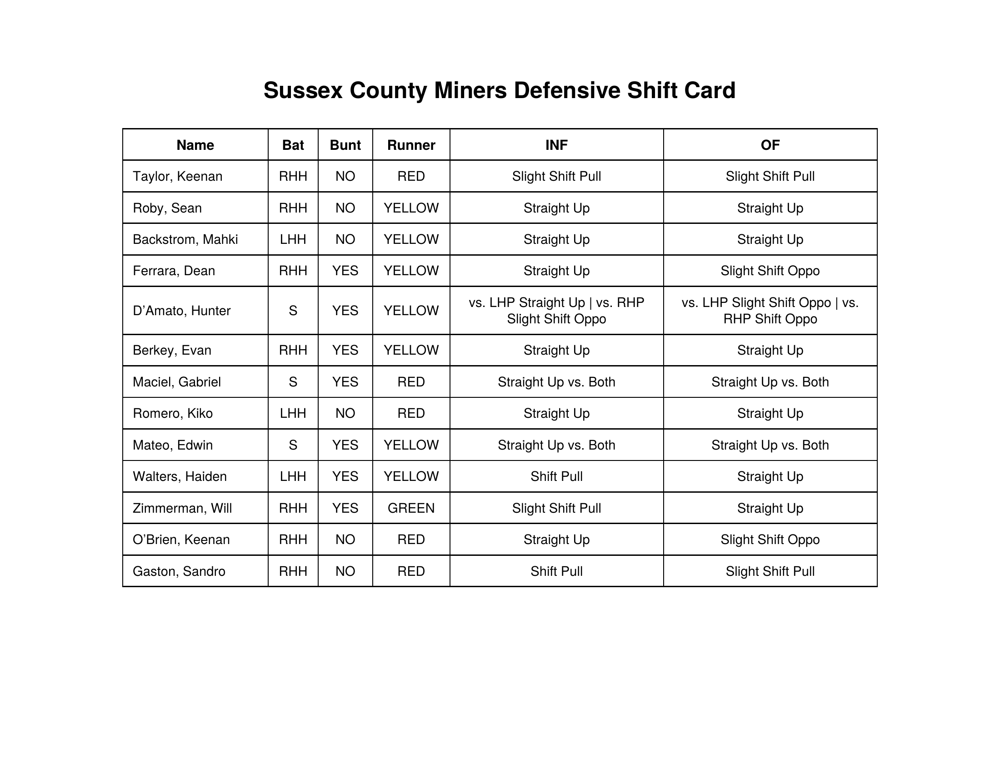
Hitter Performance Reports
Created weekly performance reports on Boulders hitters, scored on Exit Speed, Launch Angle, Contact Rate, Chase%, and Whiff%, weighted towards most recent performance. Calculated a value and consistency rating, then an overall score to rank hitters.
Pitcher Performance Reports
Boulders pitcher rolling reports analyzing pitch usage, pitch shapes, and Stuff+/Loc+/Pit+ metrics. Highlights strengths, weaknesses, and a sequencing plan for upcoming outings.
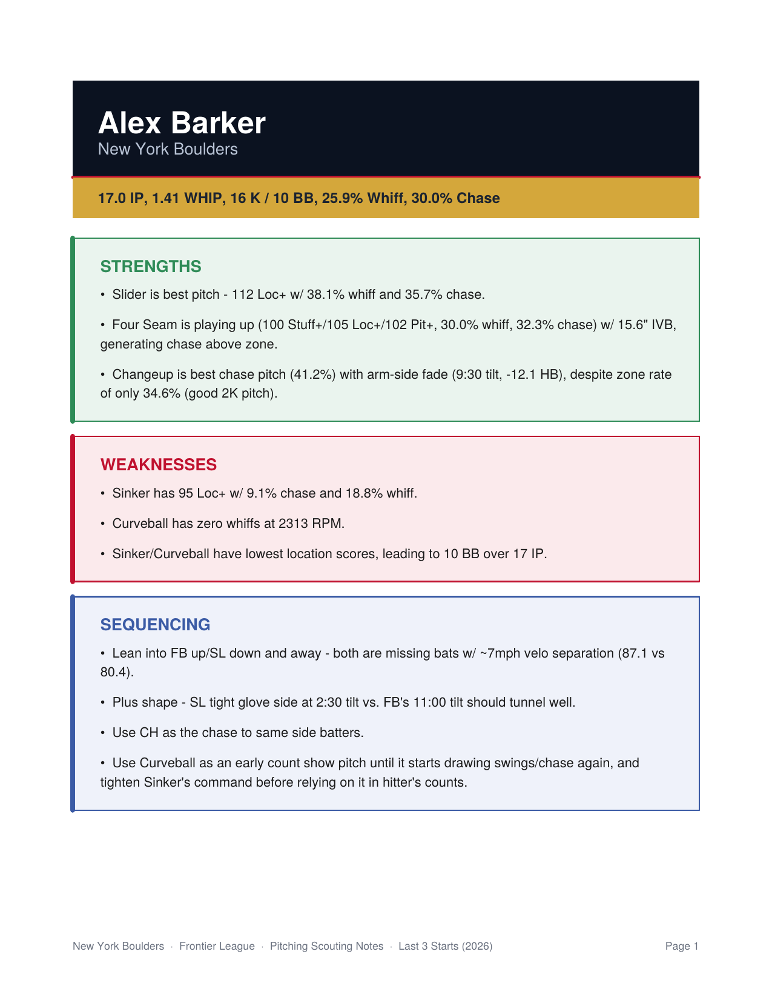
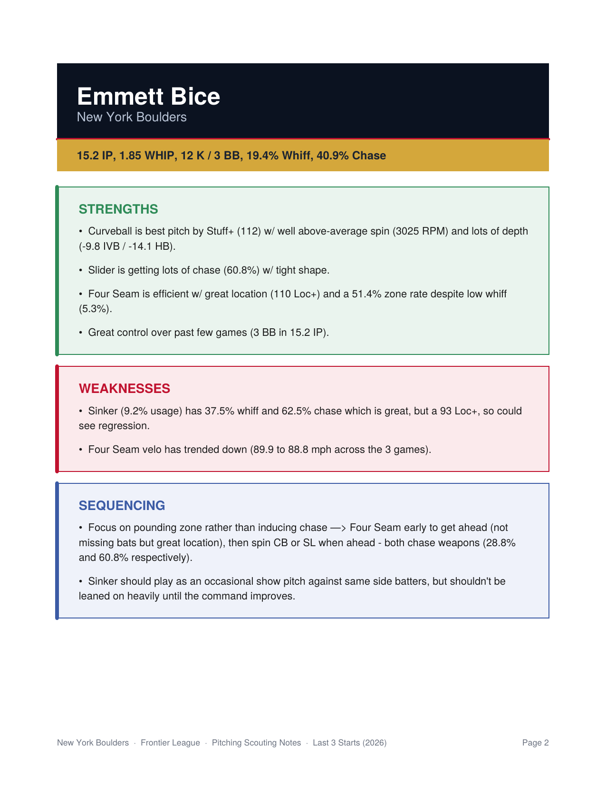
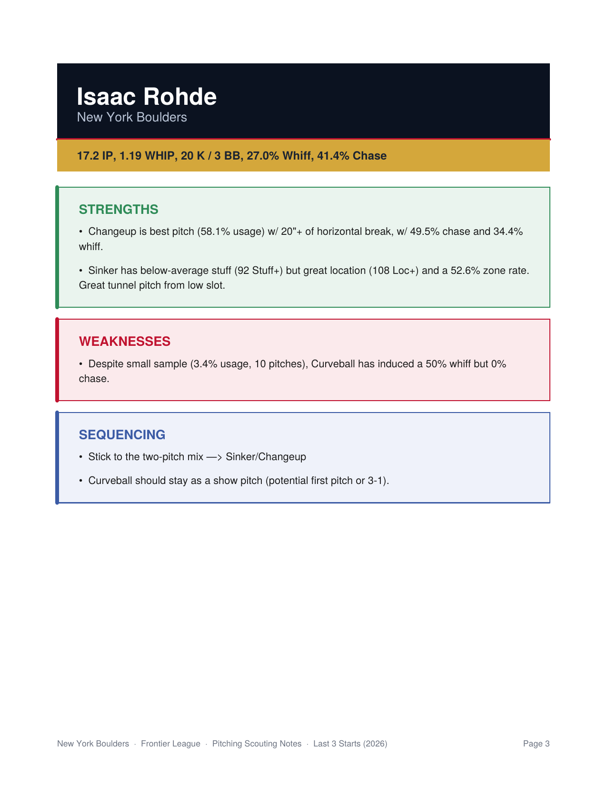
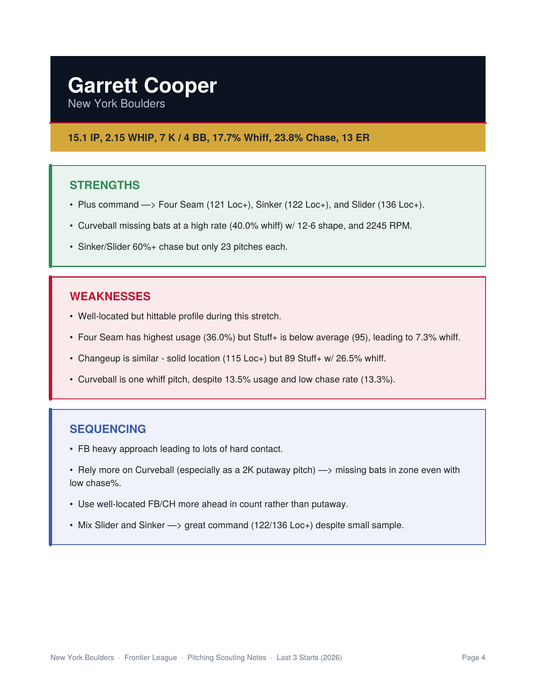
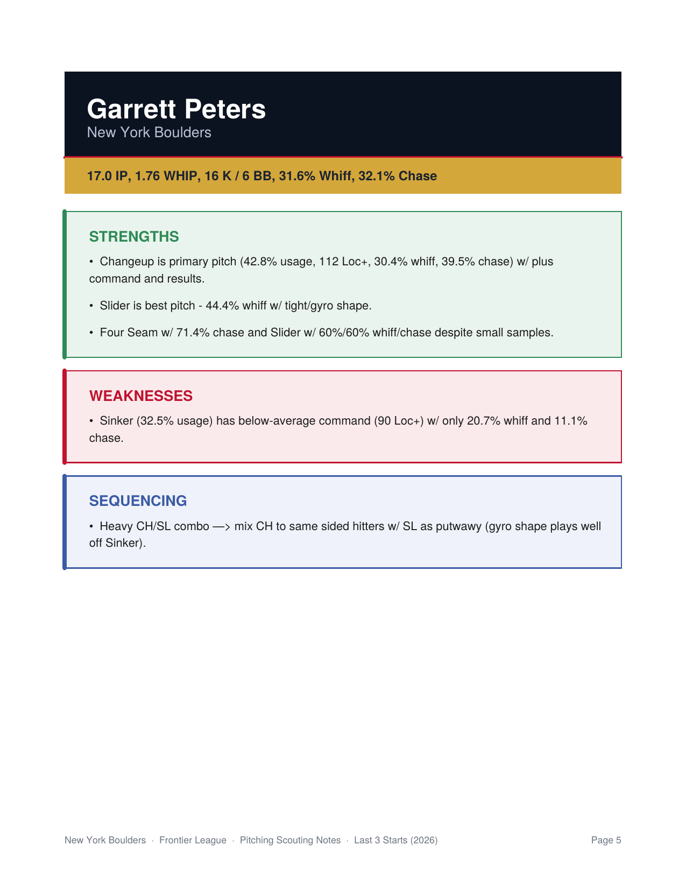
Frontier League WAR Leaderboard
Maintained a WAR leaderboard covering the whole Frontier League, calculating player value reflecting the run scoring environment, quality of contact metrics, defensive spectrum, and FIP constant. Backed by a TrackMan API pipeline pulling pitch-level data and a machine learning WAR projection model, projecting performance forward.
View the live site → harrywkap.github.io/frontier-league